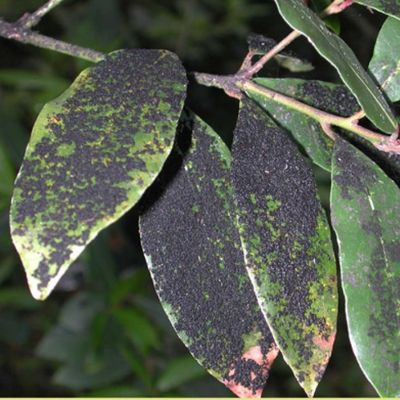

Entender quais são as principais tipos de doenças nas plantas e os principais sintomas característicos de cada uma bem como o que precisa saber para prevenir e combater essas doenças é essencial para garantir o bom crescimento e desenvolvimento das suas plantas favoritas. Saber fazer o controlo de pragas é também fundamental. É importante compreender que as plantas são organismos vivos e que tal como nós, sofrem com a entrada de parasitas bem como com as condições impostas pelo habitat ao seu redor. Devemos por essa razão ter em mente que a presença de doenças nas plantas é algo frequente e natural e que por essa razão é necessário conhecer os sintomas e as formas de tratamento para que o dano seja minimizado.
Este fungo de apodrecimento cria um pó bolorento branco-acinzentado em folhas, flores e caule. Surge em condições atmosféricas de calor e humidade. Uma solução: afaste as plantas umas das outras e não use adubo com excesso de azoto. Remova imediatamente as partes da planta que morreram.
Botrytis Cinerea– Este fungo ataca diversas espécies vegetais e em diversas fases de desenvolvimento, tanto vegetativo como reprodutivo. Esta doença pode atacar plantas novas assim como flores e frutos. Revela-se como uma importante doença pós-colheita. Um dos principais sintomas característicos desta doença é o aparecimento de um “mofo acinzentado” em várias partes da planta. Os sintomas iniciam primeiramente com queimaduras no ápice das folhas e podem estendem-se até a base e o pecíolo. (Fonte da imagem: Epic Gardening)
Estão presentes nas faces interiores das folhas na forma de áreas de esporos pustulentos, poeirentos, de cor amarelada ou castanho-ferrugem; a página exterior da folha apresenta manchas amareladas. As folhas secam e a planta definha. Uma solução: reduza a quantidade de humidade atmosférica evitando também usar adubo com excesso de azoto. Remova e destrua as partes da planta que contenham esporos. Extractos de cavalinha têm um efeito fortificante da planta.
Os sintomas da ferrugem incluem principalmente o aparecimento de manchas que surgem, numa primeira fase, na parte de cima das folhas das plantas. As manchas que aparecem nas folhas apresentam maioritariamente cor amarela,com um tom esverdeado ou alaranjado e vermelhas no centro. Algumas semanas depois do aparecimento das manchas, elas adquirem uma textura poeirenta que indica que o fungo se está a reproduzir-se. As folhas mais atacadas podem ficar deformadas e cair prematuramente.
É reconhecível pela camada branca e farinhenta que, na maioria dos casos, cobre as faces exteriores das folhas, os cálices (periantos) das flores e os rebentos jovens e tenros. As folhas tornam-se acastanhadas e secam. São vários os agentes infecciosos, frequentemente especializados num tipo de planta. Uma solução: os fungos surgem quando os dias são soalheiros e quentes e à noite há formação de orvalho. Coloque as plantas num local arejado e não use adubo com excesso de azoto. Extractos de tanaceto ou de cavalinha têm um efeito fortificante e, em caso de ataque mais forte, recorra a um preparado de enxofre.

Míldio: uma doença causada por fungos da família das peronosporáceas (subdivisão mastigomicotina) que ataca os órgãos das plantas, formando uma camada pulverulenta semelhante à farinha. (Fonte da imagem:Tudo Sobre Plantas | plantas medicinais, plantas funcionais …)
As marcas típicas são as manchas de um violeta claro ou avermelhado, delimitadas pelos veios das folhas; na face interior da folha encontram-se as áreas de esporos, de cor esbranquiçada ou acastanhada, que se assemelham a uma camada de pó. Os bacilos especializam-se num tipo de planta.
Uma solução: o ataque é fomentado por condições atmosféricas frias e húmidas,por isso evite a humidade atmosférica e de substrato e ventile bem. Destrua as folhas e plantas afectadas.
As marcas dependem dos diferentes bacilos, que podem provocar manchas negras e redondas nas folhas, sobretudo em caso de humidade contínua.
As manchas têm por vezes rebordos de cor vermelha a violeta e, eventualmente, grãos negros em cima.
Solução: evite uma alta humidade atmosférica e que ocorram lesões. Não coloque as plantas muito perto umas das outras e não utilize atempadamente as partes afectadas. Os preparados de cavalinha são bons profilácticos.

O fungo apresenta-se como uma camada negra na substância viscosa resultante de dejectos dos animais. A planta definha. Uma solução: combata os insectos sugadores que causam a substância viscosa, como os pulgões; limpe a camada negra.
Antes de aplicar qualquer fungicida, precisamos efetuar o controle dos insetos, aplicando um FORTH Inseticida ou mesmo o FORTH Mata Cochonilha. E após 3 dias, efetuar aplicação do FORTH Fungicida. Com estes tratamentos, será possível controlar tanto o inseto quanto o fungo.
Nunca se deve aplicar ambos produtos juntos, o recomendado é que você espere alguns dias entre as aplicações. Aplicar os dois produtos ao mesmo tempo pode trazer complicações sérias para suas plantas. No fim, ao tentar resolver o problema desta maneira, você estará apenas causando ainda mais problemas ao seu jardim. Portanto, seja paciente e saiba esperar os dias necessários entre uma aplicação e outra.